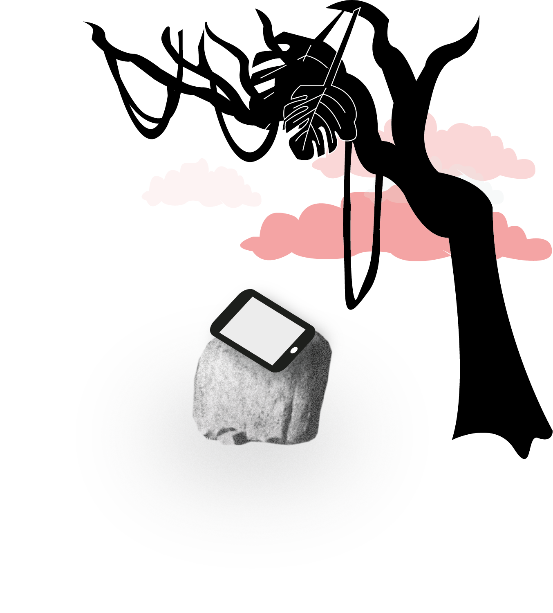
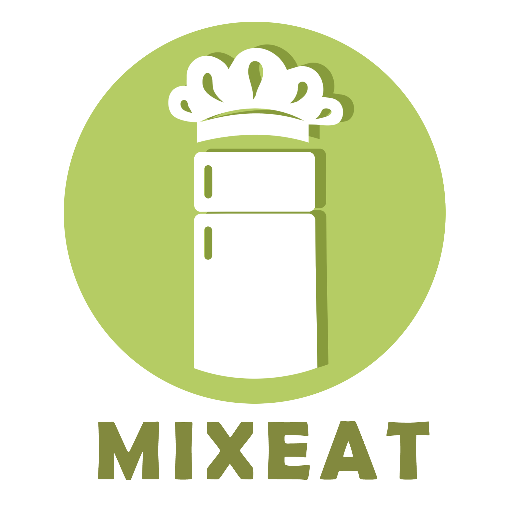

Basic UX
Group project
The UX theme was about developing a whole concept, from idea to business plan and final pitch. I learnt to structure tasks using the scrum method and developed mission, vision and values for our imaginary company. Even though our group work wasn't always easy, I was pleased with the work we managed to do and I can now see a huge increase in my learning curve. I can't wait to use all my knowledge for my first own business.
Innovative app
What?
This was by far the biggest project we went through in our first semester. After brainstorming and discussing various ideas we had, our group chose to go with the food generator app, called "mixeat". I was very enthusiastic from the start and it was a great chance for me to dive into the business part of design work. Since I have an entrepreneurial mindset and would like to have my own business in the future, it was a great exercise, going through all these steps and really think our idea through.
Here you can find all of our hand-ins:
- Business Model Canvas
- The report
- Design documentation
- Promotional Website
- Presentation
- The Prototype
My role?
I was very active in all of the core areas of this project: My main part of the report was to write and plan the business model canvas and to help others writing their parts. Designwise I made sketches for the logo, illustrations for the app and the prototype. In UX I conducted user testing and interviews with my group members and last but not least, I coded the promotional website
Skills gained
Create a business plan
Code a website in one day
Manage a 4 weeks project